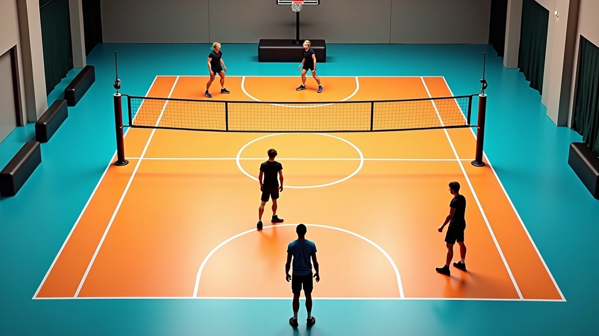

تحسين سرعة القفزة والارتفاع
تمارين متخصصة لزيادة قوة الساقين والقدرة على القفز العالي بشكل متكرر دون إرهاق.
تمارين عملية لمزامنة حركتك مع توقيت وصول الكرة من المُوزِّع بدقة عالية. تعلم كيفية القراءة السريعة والانطلاق في التوقيت المناسب.
الهجوم السريع ليس عن السرعة فقط. إنه عن التوافق المثالي بينك وبين المُوزِّع. تأخر جزء من الثانية يعني أن الكرة ستمر بجانبك، وانطلاق مبكر جداً يعني أنك ستكون في الهواء وحدك بدون كرة.
هنا يأتي دور التدريب المنظم. نحتاج إلى تمارين تعلمك قراءة حركة المُوزِّع والانطلاق في اللحظة الدقيقة. سواء كنت مبتدئاً أو لاعباً متقدماً، هذه التمارين ستحسّن من قدرتك على التنبؤ والاستجابة السريعة.

فريق التحرير والمراجعة
كتبه فريق أكاديمية الهجوم السريع التحريري، متخصص في تقديم تمارين عملية وسهلة التطبيق.
ابدأ بالوقوف على بعد 3 أمتار من المُوزِّع. ركّز على يديه فقط — لا تنظر إلى الكرة. لاحظ اللحظة التي يبدأ فيها بتحضير الكرة للرمي. هذه هي إشارتك للانطلاق.
المُوزِّع الجيد يملك إيقاع ثابت. بعد بضع محاولات، ستلاحظ أن هناك وقتاً ثابتاً بين بداية التحضير ووصول الكرة إليك. هذا هو التوقيت الذي نحتاج إلى استيعابه. لا تعتمد على الكرة — اعتمد على حركة المُوزِّع.
كرّر هذا التمرين 15 مرة في كل جلسة تدريب. ستشعر بالفرق في غضون أسبوع واحد. التوقيت يصبح أسهل كلما كررت التمرين.
هذا التمرين يعلمك كيفية الانطلاق في أوقات مختلفة. ابدأ بخطوة انطلاق بطيئة — تحرك بهدوء نحو موقع الكرة. بعدها كرّر نفس الحركة لكن بسرعة متوسطة. ثم جرّب بسرعة كاملة.
الهدف أن تشعر بالفرق بين الانطلاق المبكر والمتأخر. عندما تنطلق مبكراً جداً، ستكون في الهواء لفترة طويلة جداً وتفقد التوازن. عندما تنطلق متأخراً، الكرة ستمر فوقك مباشرة. الوقت المثالي يقع في المنتصف.
كرّر هذا 10 مرات بكل سرعة. افعل ذلك 3 مرات في الأسبوع على الأقل. ستلاحظ أن حدسك يتحسّن بشكل ملحوظ.
هذه التمارين مقدمة تعليمية عامة بناءً على أفضل الممارسات في تدريب الكرة الطائرة. كل لاعب يختلف في قدرته على الاستيعاب والتطور. يُنصح بالعمل مع مدرب متخصص لضمان تطبيق صحيح للتقنيات. إذا شعرت بألم أو إصابة، توقف عن التمرين واستشر متخصصاً طبياً.
الآن بعدما تعلمت القراءة والانطلاق الأساسي، حان الوقت لإضافة الضغط. اطلب من المُوزِّع أن يغيّر إيقاع التوزيع — أحياناً يرمي الكرة بسرعة أكثر، وأحياناً أبطأ قليلاً. هذا يجبرك على البقاء منتبهاً طول الوقت.
ستشعر في البداية أنك تخطئ أكثر. هذا طبيعي تماماً. الخطأ هو جزء من التعلم. كل خطأ يعلمك شيئاً عن الإيقاع الجديد. بعد 20-30 محاولة، ستتعود على التغييرات وستصبح استجابتك أسرع وأكثر دقة.
استمر في هذا التمرين مرتين في الأسبوع على الأقل. الهدف ليس الكمال — الهدف هو التطور المستمر والشعور بالثقة في أي وضعية توزيع.
لا تشتت نظرك بأشياء أخرى. ركّز على يدي المُوزِّع من بداية التحضير إلى نهاية الرمي. هذا يساعدك على التنبؤ بالتوقيت.
قدماك يجب أن تكون بعرض الأكتاف. ركبتاك مثنيتان قليلاً. وزنك على أطراف أصابعك. هذا يسمح لك بالانطلاق بسرعة في أي اتجاه.
التوقيت المثالي لا يكفي إذا لم تستطع القفز عالياً. اعمل على تمارين تقوية الساقين 3 مرات في الأسبوع لضمان انطلاقة قوية وثابتة.
أخبر المُوزِّع عما تريد. هل تريد توزيع أعلى أم أقل؟ أسرع أم أبطأ؟ التعاون يجعل التدريب أكثر فاعلية.
التوقيت المثالي ليس موهبة طبيعية — إنه مهارة يمكن تعلمها وتحسينها. البدء بسيط: ركّز على قراءة المُوزِّع، تدرب على الانطلاق بأوقات مختلفة، ثم أضف الضغط والتغييرات.
ستحتاج إلى صبر والتزام. التدريب المنتظم على مدى أسابيع سيحسّن من حدسك بشكل كبير. لا تتوقع النتائج الفورية — التطور يأتي مع الممارسة المستمرة.
الآن حان الوقت للبدء. اختر أحد التمارين وابدأ اليوم. المزيد من الممارسة يعني توقيت أفضل، وتوقيت أفضل يعني هجوم أكثر فاعلية وخطورة.
تمارين متخصصة لزيادة قوة الساقين والقدرة على القفز العالي بشكل متكرر دون إرهاق.
شرح تفصيلي لحركة الذراع والمعصم التي تزيد من دقة الضربة وقوتها مع تقليل الإصابات.

تعلم كيفية تحليل تشكيلة الدفاع الخصم واختيار نوع الهجوم السريع الأنسب في كل موقف.